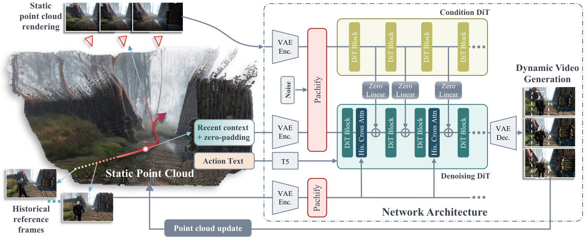
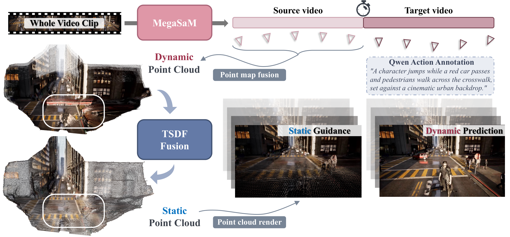
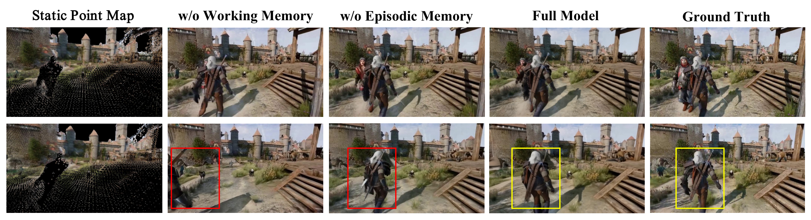

提出 scene-action-conditioned video diffusion world model，用手部动作驱动静态 3D 场景生成可交互视频。
1.2 论文速览
DWM 是视频扩散式的 Dexterous World Model：给定场景和手部动作条件，生成动作作用后的交互视频，用于构建可控的交互式 digital twin。它的核心评价是生成未来是否受动作控制并保持场景一致，而不是直接在真实机器人上输出关节控制。
1.3 关键词
关键词：DWM; Dexterous World Models; video diffusion; interactive digital twins; egocentric hand motion; 3D scene

fig:method. Overview of our system. A latent video generation model, implemented by a diffusion transformer (DiT), is conditioned on three different memory mechanisms when autoregressively generating new frames. First, recent context frames model a short-term working memory. Second, a point cloud representation (left) is autoregressively generated along with the video frames. This long-term spatial memory contains the static parts of the world. Third, a set of historical reference frames (lower left) is stored as a sparse, long-term episodic memory. Together, these memory mechanisms enable consistent long-term video generation.

fig:dataset. Dataset construction pipeline. We use Mega-SaM~li2024megasam to extract camera poses and dynamic point maps from the full video clip. For the source part, dynamic regions are erased via TSDF-Fusion, and the point cloud is rendered along the target trajectory to to serve as static geometry guidance for the target part. Qwen~yang2024qwen2 generates annotations for actions in future target frames.
fig:qualitative. Qualitative evaluation. We compare our approach to relevant baselines in several conditions. Baselines cannot accurately generate significant camera pose changes while maintaining a consistent scene (top). When revisiting a previously seen camera pose, baselines fail to complete sparse point clouds or forget details, resulting in inconsistency (center). The accuracy of prompted actions is often low, and sometimes the character disappears during the generation for the baselines (bottom). Our approach successfully handles these challenging scenarios. \vspace-10pt

fig:ablation. Ablation of different memory mechanisms. We evaluate several variants of our model: w/o short-term working memory: the full model without recent context frames; w/o long-term episodic memory: the full model without sparse historical keyframes; full model including short-term working and long-term spatial and episodic memory. Unsurprisingly, the working memory is required for smooth and plausible motions of dynamic objects. The episodic memory is crucial in helping remember visual details from the past, including previously seen characters or objects. \vspace-10pt
fig:point_fusion. Autoregressive point cloud fusion. The system continuously updates spatial memory by integrating newly observed static maps. These maps are reconstructed online using CUT3R in a recurrent manner, while TSDF-Fusion filters out dynamic elements to maintain map consistency. \vspace-10ptfig:teaser. We augment video world models with memory. In this context, we consider the conventional approach of conditioning autoregressively generated frames with a few recent context frames as a short-term working memory. We explore two additional mechanisms modeling different types of long-term memory: spatial and episodic memory. The former is represented as a point map that is autoregressively generated along with the video frames and fused into the spatial memory by extracting only its static scene parts. To remember visual detail and identities for long time horizons, we also store a sparse set of historical reference frames as an episodic memory. Together, our memory mechanisms significantly improve the long-term consistency of emerging video world models.